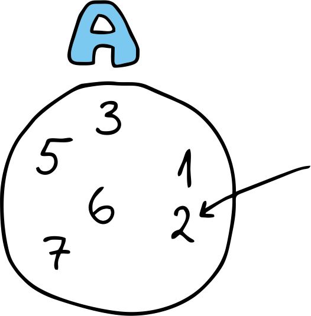
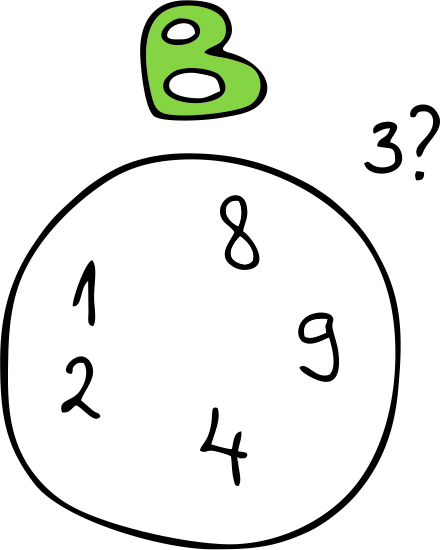
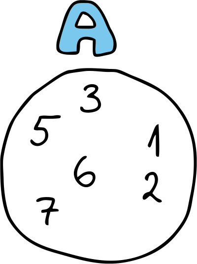
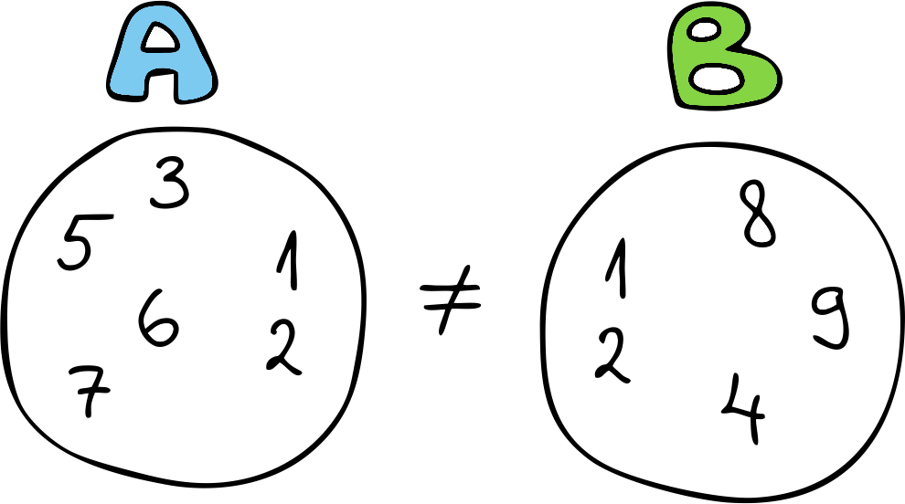
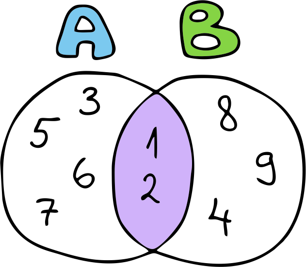
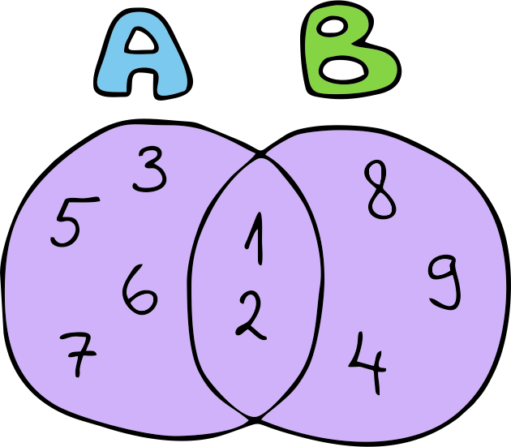
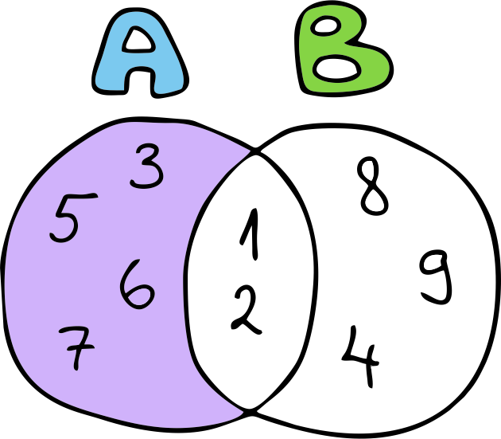
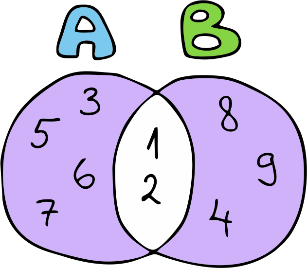
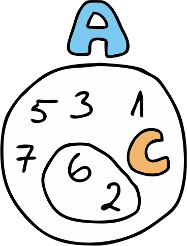

| Avaldis | Väärtus | Selgitus | Joonis |
|---|---|---|---|
| 2 in a | True | Kontrollib, kas element on hulgas. |

|
| 3 not in b | True | Kontrollib, ega elementi ei ole hulgas. |

|
| a == {{'{'}}3, 6, 7, 1, 2{{'}'}} | True | Kontrollib, kas hulgad on võrdsed. Kusjuures elementide järjekord pole oluline. |

|
| a != b | True | Kontrollib, ega hulgad ei ole võrdsed. Elementide järjekord pole oluline. |

|
| a & b | {{'{'}}1, 2{{'}'}} | Ühisosa ehk hulk elementidest, mida sisaldavad mõlemad hulgad. |

|
| a | b | {{'{'}}1, 3, 5, 2, 6, 7, 8, 9, 4{{'}'}} | Ühend ehk hulk elementidest, mida sisaldab vähemalt üks hulkadest. Teisisõnu elemendid, mis on hulgas A, hulgas B või neis mõlemas. |

|
| a - b | {{'{'}}3, 5, 6, 7{{'}'}} | Vahe ehk hulk elementidest, mis on hulgas A, aga mida ei ole hulgas B. Teisisõnu hulk A, millest on ära võetud A ja B ühisosa. |

|
| a ^ b | {{'{'}}3, 5, 6, 7{{'}'}} | Sümmeetriline vahe ehk hulk elementidest, mis on hulgas A või hulgas B, aga mitte neis mõlemas. Teisisõnu ühend, millest on ära võetud ühisosa. |

|
| c < a | True | Kontrollib, kas C on hulga A range alamhulk ehk kas hulk C koosneb ainult elementidest, mis on ka hulgas A. Kusjuures C ja A ei tohi olla võrdsed. |

|
| a > c | True | Kontrollib, kas A on hulga C range ülemhulk ehk kas kõik hulga C elemendid on olemas ka hulgas A. Kusjuures C ja A ei tohi olla võrdsed. | |
| c <= a | True | Kontrollib, kas C on hulga A mitterange alamhulk ehk kas hulk C koosneb ainult elementidest, mis on ka hulgas A. Hulgad tohivad olla võrdsed. | |
| a >= c | True | Kontrollib, kas A on hulga C mitterange ülemhulk ehk kas kõik hulga C elemendid on olemas ka hulgas A. Hulgad tohivad olla võrdsed. |
| Funktsiooni rakendamine | Tagastusväärtus | Selgitus |
|---|---|---|
| len({{'{'}}1, 5, 7, 11, 3{{'}'}}) | 5 | Leiab hulga pikkuse (elementide arvu). |
| max({{'{'}}1, 5, 7, 11, 3{{'}'}}) | 11 | Leiab suurima elemendi. |
| min({{'{'}}1, 5, 7, 11, 3{{'}'}}) | 1 | Leiab väikseima elemendi. |
| sum({{'{'}}1, 5, 7, 11, 3{{'}'}}) | 27 | Leiab elementide summa. |
| sorted({{'{'}}1, 5, 7, 11, 3{{'}'}}) | [1, 3, 5, 7, 11] | Loob hulga elementidest sorteeritud järjendi. |
| Meetodi rakendamine | Hulga väärtus pärast rakendamist | Tagastusväärtus | Selgitus |
|---|---|---|---|
| {{'{'}}4, 6, 5{{'}'}}.add(7) | {{'{'}}4, 6, 5, 7{{'}'}} | None | Lisab hulka uue elemendi, kui sellist elementi veel ei leidu. |
| {{'{'}}4, 6, 5{{'}'}}.add(6) | {{'{'}}4, 6, 5{{'}'}} | None | |
| {{'{'}}4, 6, 5{{'}'}}.clear() | {{'{'}}{{'}'}} | None | Eemaldab hulgast kõik elemendid. |
| {{'{'}}4, 6, 5{{'}'}}.discard(4) | {{'{'}}6, 5{{'}'}} | None | Eemaldab hulgast etteantud elemendi. Kui sellist elementi pole, siis ei tee midagi. |
| {{'{'}}4, 6, 5{{'}'}}.remove(4) | {{'{'}}6, 5{{'}'}} | None | Eemaldab hulgast etteantud elemendi. Kui sellist elementi pole, siis viskab vea. |
| {{'{'}}4, 6, 5{{'}'}}.pop() | {{'{'}}4, 5{{'}'}} | 6 | Eemaldab ja tagastab hulgast suvalise elemendi. |
| {{'{'}}4, 6, 5{{'}'}}.update({{'{'}}4, 7{{'}'}}) | {{'{'}}4, 6, 5, 7{{'}'}} | None | Lisab hulka elemendid mõnest teisest hulgast, järjendist või ennikust. |
| {{'{'}}4, 6, 5{{'}'}}.intersection({{'{'}}3, 4{{'}'}}) | {{'{'}}4, 6, 5{{'}'}} | {{'{'}}4{{'}'}} | Leiab hulkade ühisosa. |
| {{'{'}}4, 6, 5{{'}'}}.union({{'{'}}3, 4{{'}'}}) | {{'{'}}4, 6, 5{{'}'}} | {{'{'}}3, 4, 5, 6{{'}'}} | Leiab hulkade ühendi. |
| {{'{'}}4, 6, 5{{'}'}}.difference({{'{'}}3, 4{{'}'}}) | {{'{'}}4, 6, 5{{'}'}} | {{'{'}}6, 5{{'}'}} | Leiab hulkade vahe. |
| {{'{'}}4, 6, 5{{'}'}}.symmetric_difference({{'{'}}3, 4{{'}'}}) | {{'{'}}4, 6, 5{{'}'}} | {{'{'}}6, 5, 3{{'}'}} | Leiab hulkade sümmeetrilise vahe. |